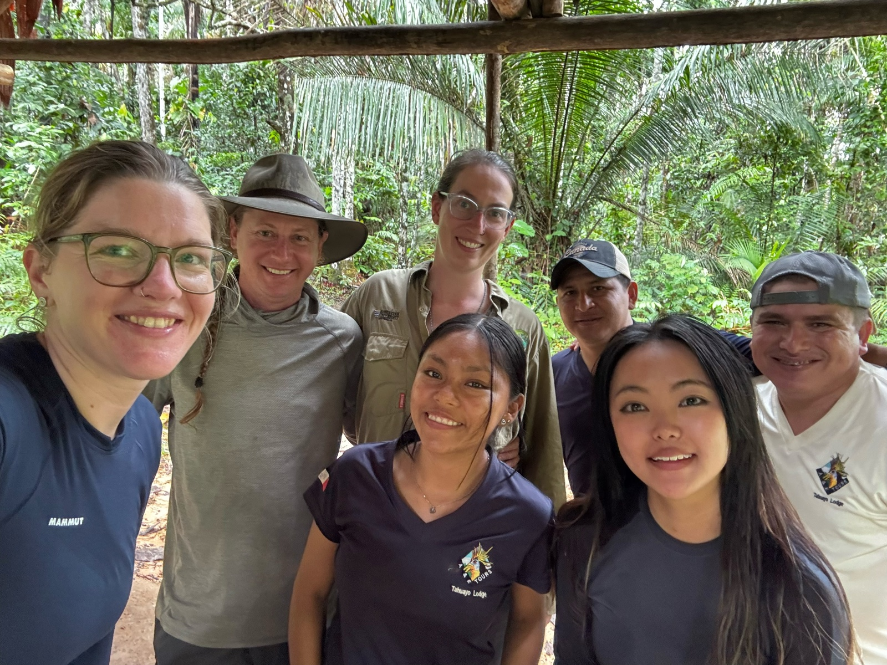
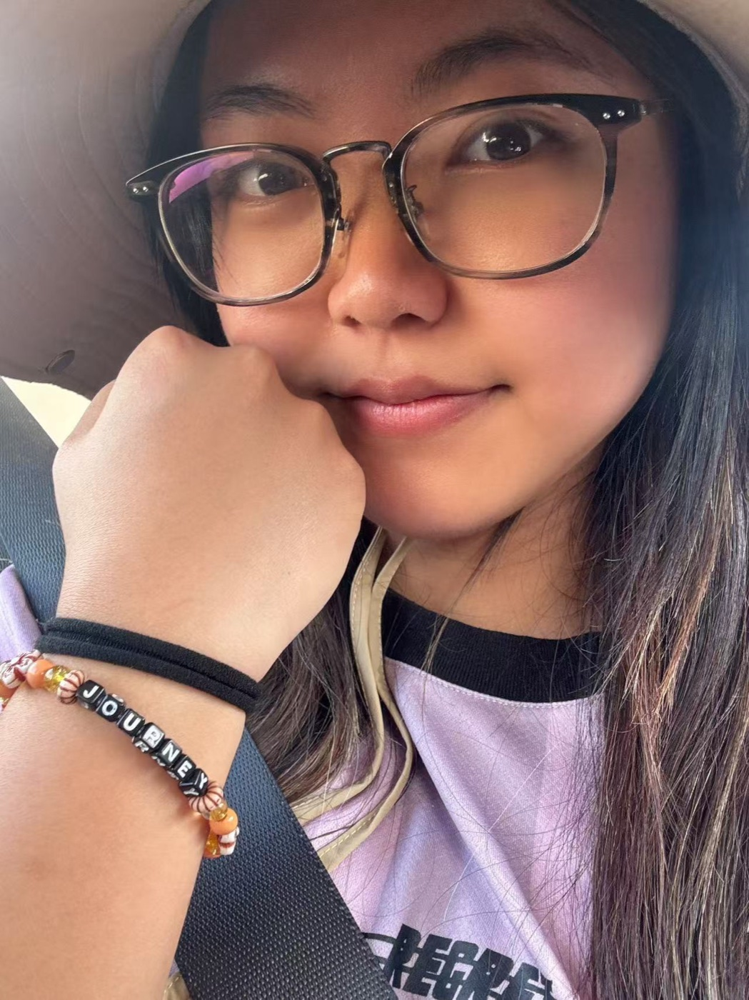

Things People Carry for One Another
Some encounters end before we understand how much they have given us.

Before the journey.
On the afternoon I finished my abstract algebra final, I walked out of the classroom feeling emptied out by the semester. I graded some assignments, bought a drink, and started heading home to pack for Peru. Outside Allbritton, I realized that my phone was gone.
I retraced my steps and then ran home to open Find My. Part of me was already planning for the worst: a new phone, a SIM card, an airport departure that was getting closer. Instead, someone had found the phone and brought it to Olin Library. I never learned who. A stranger had noticed something I lost, carried it across campus, and left it somewhere I could find it again.
The trip had not begun, but something of mine had already gone missing and been returned by someone whose part in my day I could not repay directly.
A few days later, during a layover in Lima, I saw another Chinese traveler struggling to communicate with airport staff about her missing bag. I stopped to translate and helped her figure out where it had gone. While we were looking, I kept thinking that if my mother were alone and anxious in an unfamiliar airport, I would hope someone nearby would do the same for her.
On a later flight, I sat beside an older couple. We talked for a while, and before leaving, the woman opened her bag and showed me several bracelets she had made. She asked me to choose one. I picked the bracelet that said “Journey,” and she handed it to me as casually as if people gave handmade objects to strangers every day.
A temporary kind of belonging.
At the rainforest lodge, one evening became a game of Uno over popcorn. The light inside was warm; outside was the dark of the forest. Around the table were people whose lives would ordinarily have had little reason to intersect. No one knew my grades, how the semester had gone, or what I was trying to become. We were simply playing cards.
I wrote afterward that it felt like a temporary family. The word “temporary” did not make it less real. It described the peculiar ease of a connection that had not yet accumulated expectations. I did not have to summarize my life before taking a place at the table.
Later, on a night excursion, our guide asked us to turn off our headlamps. The darkness swallowed the canoe. I could not see the shoreline, and my body registered that loss of control before I could reason with it. But the guide was still there. The boat and the other travelers were still there. Gradually I could hear the water, insects, and my own breathing.
That moment was not a story about becoming fearless. The fear changed because I was not alone in it. Someone else’s presence let me stay long enough to notice more than the thing that frightened me.
The word “temporary”
did not make it
less real.
A small object. A longer afterlife.
When people began leaving the lodge, I was surprised by how much I felt their absence. The tables, the river, the place itself were still there. But the temporary world we had made together was coming apart. Knowing that an encounter will be brief does not tell you how lightly you will be able to leave it.
Coming back did not mean returning as a different person with everything resolved. There were still emails, research, plans, and the unfinished work of being myself. The journey had not taken those things away.
What remained was smaller and more concrete: the memory of the table, the dark canoe, the phone waiting at Olin, the bracelet. They did not solve anything for me. They were evidence that a day could be changed by someone who entered it only briefly.

They did not solve anything for me. They simply stayed, like small pieces of evidence.
A little more from the journal
There is something strange about the closeness of travel. It is brief, and perhaps that is why it shines so brightly.
It has not yet had time to grow into responsibility, or to become complicated.
It simply settles over you, lights something up, and is already preparing to leave.
I still have the bracelet. I do not need it to stand for a transformation. It is enough that someone made it, that she offered it to me, and that I carried it home.